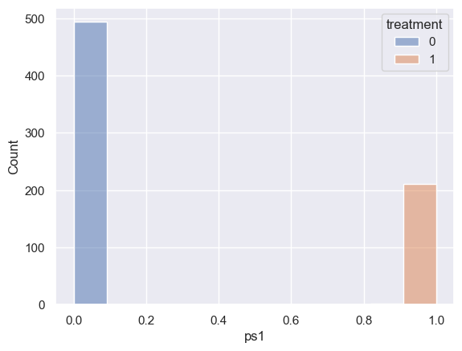
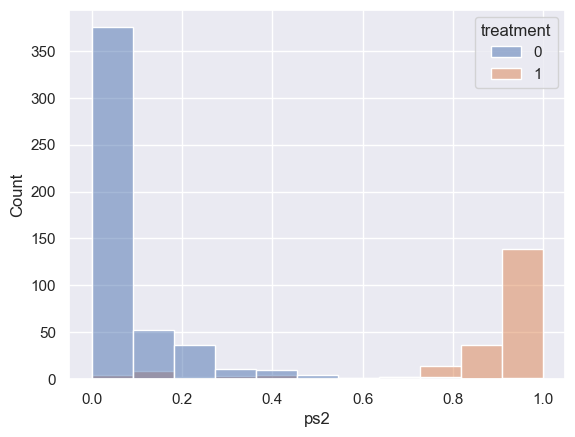

# load packages import numpy as np import pandas as pd import matplotlib.pyplot as plt import seaborn as sns import math sns.set() # set the style
# read data
df = pd.read_csv('./Data-Science-with-Python/data/groupon.csv')
df.info()
<class 'pandas.core.frame.DataFrame'>
RangeIndex: 710 entries, 0 to 709
Data columns (total 13 columns):
# Column Non-Null Count Dtype
--- ------ -------------- -----
0 deal_id 710 non-null object
1 start_date 710 non-null object
2 min_req 710 non-null int64
3 treatment 710 non-null int64
4 prom_length 710 non-null int64
5 price 710 non-null int64
6 discount_pct 710 non-null int64
7 coupon_duration 710 non-null int64
8 featured 710 non-null int64
9 limited_supply 710 non-null int64
10 fb_likes 710 non-null int64
11 quantity_sold 710 non-null int64
12 revenue 710 non-null int64
dtypes: int64(11), object(2)
memory usage: 72.2+ KB
df
| deal_id | start_date | min_req | treatment | prom_length | price | discount_pct | coupon_duration | featured | limited_supply | fb_likes | quantity_sold | revenue | |
|---|---|---|---|---|---|---|---|---|---|---|---|---|---|
| 0 | heli-flights | 9/23/2011 | 10 | 1 | 4 | 99 | 51 | 185 | 1 | 1 | 290 | 540 | 53460 |
| 1 | gl-champion-series-tennis-electric-factory | 9/23/2011 | 20 | 1 | 2 | 95 | 41 | 9 | 0 | 1 | 43 | 190 | 18050 |
| 2 | realm-of-terror-horror-experience | 9/23/2011 | 50 | 1 | 3 | 25 | 50 | 38 | 0 | 1 | 208 | 380 | 9500 |
| 3 | newport-gourmet | 9/23/2011 | 15 | 1 | 3 | 50 | 50 | 369 | 0 | 1 | 16 | 90 | 4500 |
| 4 | the-clayroom | 9/23/2011 | 20 | 1 | 4 | 25 | 52 | 185 | 0 | 1 | 85 | 580 | 14500 |
| ... | ... | ... | ... | ... | ... | ... | ... | ... | ... | ... | ... | ... | ... |
| 705 | whitewater-challengers-9 | 5/2/2012 | 1 | 0 | 5 | 45 | 54 | 164 | 0 | 1 | 110 | 170 | 7650 |
| 706 | world-domination-events | 6/23/2012 | 1 | 0 | 8 | 149 | 67 | 52 | 0 | 1 | 116 | 150 | 22350 |
| 707 | xtreme-xperience-chicago | 7/27/2012 | 1 | 0 | 4 | 159 | 60 | 29 | 0 | 1 | 104 | 130 | 20670 |
| 708 | your-neighborhood-theatre | 4/12/2012 | 1 | 0 | 4 | 19 | 51 | 187 | 0 | 1 | 93 | 1000 | 19000 |
| 709 | yu-kids-island | 5/1/2012 | 1 | 0 | 3 | 28 | 53 | 99 | 0 | 1 | 214 | 820 | 22960 |
710 rows × 13 columns
df.iloc[:, 2:].groupby(['treatment']).mean()
| min_req | prom_length | price | discount_pct | coupon_duration | featured | limited_supply | fb_likes | quantity_sold | revenue | |
|---|---|---|---|---|---|---|---|---|---|---|
| treatment | ||||||||||
| 0 | 1.00000 | 3.809717 | 37.870445 | 52.973684 | 95.941296 | 0.105263 | 0.852227 | 77.941296 | 333.002024 | 9720.987854 |
| 1 | 26.50463 | 3.379630 | 29.421296 | 53.263889 | 131.842593 | 0.143519 | 0.777778 | 113.203704 | 509.351852 | 12750.694444 |
# separate control and treatment for t-test df_control = df[df.treatment==0] df_treatment = df[df.treatment==1]
# student's t-test for revenue (dependent variable)
from scipy.stats import ttest_ind
print(df_control.revenue.mean(), df_treatment.revenue.mean())
# compare samples
_, p = ttest_ind(df_control.revenue, df_treatment.revenue)
print(f'p={p:.3f}')
# interpret
alpha = 0.05 # significance level
if p > alpha:
print('same distributions/same group mean (fail to reject H0 - we do not have enough evidence to reject H0)')
else:
print('different distributions/different group mean (reject H0)')
9720.987854251012 12750.694444444445
p=0.040
different distributions/different group mean (reject H0)
# student's t-test for facebook likes (dependent variable)
from scipy.stats import ttest_ind
print(df_control.fb_likes.mean(), df_treatment.fb_likes.mean())
# compare samples
_, p = ttest_ind(df_control.fb_likes, df_treatment.fb_likes)
print(f'p={p:.3f}')
# interpret
alpha = 0.05 # significance level
if p > alpha:
print('same distributions/same group mean (fail to reject H0 - we do not have enough evidence to reject H0)')
else:
print('different distributions/different group mean (reject H0)')
77.9412955465587 113.20370370370371
p=0.004
different distributions/different group mean (reject H0)
# choose features for propensity score calculation X = df[['prom_length', 'price', 'discount_pct', 'coupon_duration', 'featured', 'limited_supply']] y = df['treatment'] X.head()
| prom_length | price | discount_pct | coupon_duration | featured | limited_supply | |
|---|---|---|---|---|---|---|
| 0 | 4 | 99 | 51 | 185 | 1 | 1 |
| 1 | 2 | 95 | 41 | 9 | 0 | 1 |
| 2 | 3 | 25 | 50 | 38 | 0 | 1 |
| 3 | 3 | 50 | 50 | 369 | 0 | 1 |
| 4 | 4 | 25 | 52 | 185 | 0 | 1 |
# use logistic regression to calculate the propensity scores from sklearn.linear_model import LogisticRegression lr = LogisticRegression() lr.fit(X, y)
LogisticRegression()In a Jupyter environment, please rerun this cell to show the HTML representation or trust the notebook.
On GitHub, the HTML representation is unable to render, please try loading this page with nbviewer.org.
LogisticRegression()
# get the coefficients lr.coef_.ravel()
array([-0.32837139, -0.0085971 , -0.00794036, 0.00352025, 0.30799496,
-0.3664981 ])
# get the feature names X.columns.to_numpy()
array(['prom_length', 'price', 'discount_pct', 'coupon_duration',
'featured', 'limited_supply'], dtype=object)
# combine features and coefficients into a dataframe
coeffs = pd.DataFrame({
'column':X.columns.to_numpy(),
'coeff':lr.coef_.ravel(),
})
coeffs
| column | coeff | |
|---|---|---|
| 0 | prom_length | -0.328371 |
| 1 | price | -0.008597 |
| 2 | discount_pct | -0.007940 |
| 3 | coupon_duration | 0.003520 |
| 4 | featured | 0.307995 |
| 5 | limited_supply | -0.366498 |
# prediction
pred_binary = lr.predict(X) # binary 0 control, 1, treatment
pred_prob = lr.predict_proba(X) # probabilities for classes
print('the binary prediction is:', pred_binary[0])
print('the corresponding probabilities are:', pred_prob[0])
the binary prediction is: 0
the corresponding probabilities are: [0.7408075 0.2591925]
# the propensity score (ps) is the probability of being 1 (i.e., in the treatment group)
df['ps'] = pred_prob[:, 1]
# calculate the logit of the propensity score for matching if needed
# I just use the propensity score to match in this tutorial
def logit(p):
logit_value = math.log(p / (1-p))
return logit_value
df['ps_logit'] = df.ps.apply(lambda x: logit(x))
df.head()
| deal_id | start_date | min_req | treatment | prom_length | price | discount_pct | coupon_duration | featured | limited_supply | fb_likes | quantity_sold | revenue | ps | ps_logit | |
|---|---|---|---|---|---|---|---|---|---|---|---|---|---|---|---|
| 0 | heli-flights | 9/23/2011 | 10 | 1 | 4 | 99 | 51 | 185 | 1 | 1 | 290 | 540 | 53460 | 0.259192 | -1.050170 |
| 1 | gl-champion-series-tennis-electric-factory | 9/23/2011 | 20 | 1 | 2 | 95 | 41 | 9 | 0 | 1 | 43 | 190 | 18050 | 0.230198 | -1.207194 |
| 2 | realm-of-terror-horror-experience | 9/23/2011 | 50 | 1 | 3 | 25 | 50 | 38 | 0 | 1 | 208 | 380 | 9500 | 0.288405 | -0.903144 |
| 3 | newport-gourmet | 9/23/2011 | 15 | 1 | 3 | 50 | 50 | 369 | 0 | 1 | 16 | 90 | 4500 | 0.511781 | 0.047131 |
| 4 | the-clayroom | 9/23/2011 | 20 | 1 | 4 | 25 | 52 | 185 | 0 | 1 | 85 | 580 | 14500 | 0.325212 | -0.729919 |
# check the overlap of ps for control and treatment using histogram # if not much overlap, the matching won't work sns.histplot(data=df, x='ps', hue='treatment') # multiple="dodge" for
/opt/homebrew/anaconda3/envs/sklearn-env/lib/python3.12/site-packages/seaborn/_base.py:948: FutureWarning: When grouping with a length-1 list-like, you will need to pass a length-1 tuple to get_group in a future version of pandas. Pass `(name,)` instead of `name` to silence this warning.
data_subset = grouped_data.get_group(pd_key)
/opt/homebrew/anaconda3/envs/sklearn-env/lib/python3.12/site-packages/seaborn/_base.py:948: FutureWarning: When grouping with a length-1 list-like, you will need to pass a length-1 tuple to get_group in a future version of pandas. Pass `(name,)` instead of `name` to silence this warning.
data_subset = grouped_data.get_group(pd_key)
<Axes: xlabel='ps', ylabel='Count'>

# adding 'min_req' here makes matching not working - because treatment is derived from min_req # there is no overlap and thus matching will not work X1 = df[['min_req', 'prom_length', 'price', 'discount_pct', 'coupon_duration', 'featured','limited_supply']] y = df['treatment'] # use logistic regression to calculate the propensity scores lr1 = LogisticRegression(max_iter=1000) lr1.fit(X1, y) pred_prob1 = lr1.predict_proba(X1) # probabilities for classes df['ps1'] = pred_prob1[:, 1] sns.histplot(data=df, x='ps1', hue='treatment')
/opt/homebrew/anaconda3/envs/sklearn-env/lib/python3.12/site-packages/seaborn/_base.py:948: FutureWarning: When grouping with a length-1 list-like, you will need to pass a length-1 tuple to get_group in a future version of pandas. Pass `(name,)` instead of `name` to silence this warning.
data_subset = grouped_data.get_group(pd_key)
/opt/homebrew/anaconda3/envs/sklearn-env/lib/python3.12/site-packages/seaborn/_base.py:948: FutureWarning: When grouping with a length-1 list-like, you will need to pass a length-1 tuple to get_group in a future version of pandas. Pass `(name,)` instead of `name` to silence this warning.
data_subset = grouped_data.get_group(pd_key)
<Axes: xlabel='ps1', ylabel='Count'>

# stating date can also determine treatment value for most cases # so we do not include it in the propensity score calculation df.start_date = pd.to_datetime(df.start_date) fig, ax = plt.subplots(figsize=(20, 10)) sns.scatterplot(data=df, x='start_date', y='revenue', hue='treatment')
<Axes: xlabel='start_date', ylabel='revenue'>

# adding 'starting_date' here via a `recency` feature # there is only little overlap resulting in not enough matched observations last_date = df.start_date.max() df['recency'] = (last_date - df.start_date).dt.days X2 = df[['recency', 'prom_length', 'price', 'discount_pct', 'coupon_duration', 'featured','limited_supply']] y = df['treatment'] # use logistic regression to calculate the propensity scores lr2 = LogisticRegression(max_iter=1000) lr2.fit(X2, y) pred_prob2 = lr2.predict_proba(X2) # probabilities for classes df['ps2'] = pred_prob2[:, 1] sns.histplot(data=df, x='ps2', hue='treatment')
/opt/homebrew/anaconda3/envs/sklearn-env/lib/python3.12/site-packages/seaborn/_base.py:948: FutureWarning: When grouping with a length-1 list-like, you will need to pass a length-1 tuple to get_group in a future version of pandas. Pass `(name,)` instead of `name` to silence this warning.
data_subset = grouped_data.get_group(pd_key)
/opt/homebrew/anaconda3/envs/sklearn-env/lib/python3.12/site-packages/seaborn/_base.py:948: FutureWarning: When grouping with a length-1 list-like, you will need to pass a length-1 tuple to get_group in a future version of pandas. Pass `(name,)` instead of `name` to silence this warning.
data_subset = grouped_data.get_group(pd_key)
<Axes: xlabel='ps2', ylabel='Count'>

# use 25% of standard deviation of the propensity score as the caliper/radius
# get the k closest neighbors for each observations
# relax caliper and increase k can provide more matches
from sklearn.neighbors import NearestNeighbors
caliper = np.std(df.ps) * 0.25
print(f'caliper (radius) is: {caliper:.4f}')
n_neighbors = 10
# setup knn
knn = NearestNeighbors(n_neighbors=n_neighbors, radius=caliper)
ps = df[['ps']] # double brackets as a dataframe
knn.fit(ps)
caliper (radius) is: 0.0304
NearestNeighbors(n_neighbors=10, radius=0.030379121102554488)In a Jupyter environment, please rerun this cell to show the HTML representation or trust the notebook.
On GitHub, the HTML representation is unable to render, please try loading this page with nbviewer.org.
NearestNeighbors(n_neighbors=10, radius=0.030379121102554488)